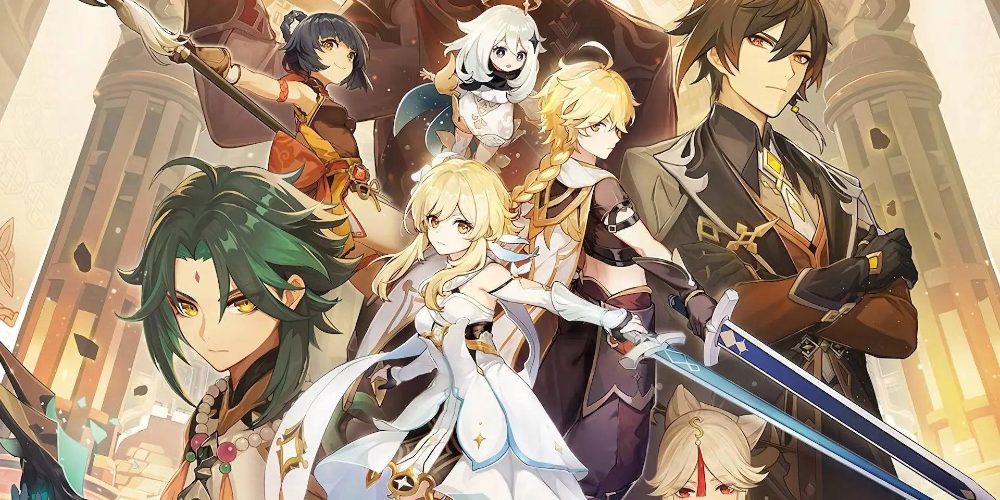

NEWS
Informasi Terbaru Mengenai Anime Genshin Impact Sedang Dinantikan!
SERIAL SAO (SWORD ART ONLINE)
SAO

Dunia game virtual pertama, serta latar dari bagian pertama cerita, yang dikenal sebagai SAO untuk pendeknya. Dunia SAO merupakan sebuah kastil raksasa yang disebut floating Aincrad,Read more..
ALO

Latar untuk bagian kedua dari cerita, yang dikenal sebagai ALO untuk pendeknya. Semua pemain dalam permainan memiliki sayap dan mampu untuk terbang. Read more..
GGO

Latar untuk bagian ketiga cerita, yang dikenal sebagai GGO untuk pendeknya. GGO adalah dunia game virtual dengan fokus utama pada senjata api, meskipun senjata jarak Read more..
UNDERWORLD

Latar untuk bagian keempat cerita, yang dikenal sebagai UW untuk pendeknya. UW adalah Dunia Game Virtual pertama yang memperkenalkan dimana pemain bukan berlatar atau terletak di satu dunia melainkan simulasi AI Read more..
Berita kali ini ambil dari komunitas “Genshin Impact“, katanya bakal ada animasi pendek baru yang judulnya “The Road Not Taken“. Pengumuman ini bikin heboh para fans yang nggak sabar nunggu konten baru ini rilis.
Walaupun ini bukan pertama kalinya Hoyoverse ngerilis animasi pendek, tapi kali ini fokusnya ke dua karakter utama game: si kembar Aether dan Lumina, yang selama ini belum pernah dapet spotlight di animasi pendek sebelumnya. Info soal animasi ini masih sedikit banget, tapi katanya bakal ngulik cerita hidup mereka di masa lalu dan situasi misterius mereka sekarang.

Tanggal rilisnya animasi ini juga belum diumumin, tapi diperkirain bakal tayang dalam satu atau dua minggu di channel Youtube resmi game-nya. Walaupun infonya diitung, tetep aja kecewa karena adaptasi anime dari Ufotable masih belum ada kabar. Udah lebih dari setahun sejak pengumuman resminya, dan para fans berharap ada update soal ini.
Perlu dicatet nih, proyek yang diumumin Ufotable waktu itu dijelasin sebagai “kolaborasi jangka panjang”, jadi diperkirain studio ini juga yang bakal ngerjain beberapa animasi pendek Genshin Impact. Tapi, masih belum ada kabar soal bakal ada series anime atau nggak, dan ini bikin banyak pengguna di medsos pada bikin “bocoran palsu” buat dapetin perhatian.